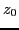
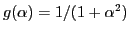
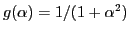

In Eq. (23), the time change rate of the kinetic energy of a
particle (the absorbed power by the particle) is approximated by
which uses a high order approximation of the velocity . Next, we
consider lower order approximations of
and check whether
Landau damping can be recovered in these lower order approximations. If we
approximate
as
 |
 |
|
|
| |
|
|
(48) |
then it is obvious that
will reduce to zero when it is
averaged over initial position  in one wavelength. Therefore, Landau
damping is missed in this approximation. If we approximate
as
|
|
|
|
| |
|
|
(49) |
then, according to the derivation given in the above section, we have
and
 |
|
|
(51) |
The right-hand side of Eq. (51) do not approach zero for large  (I have verified this for the case that
).
Since there is a
factor in the integrand of the above integral,
the important contribution to the integral must come from the vicinity of
(I have verified this for the case that
).
Since there is a
factor in the integrand of the above integral,
the important contribution to the integral must come from the vicinity of
 . Therefore we expand
as
. Therefore we expand
as
Since
is even in  , only terms that are also
even need to be retained in the above expansion. Using these, Eq.
(51) is written as
, only terms that are also
even need to be retained in the above expansion. Using these, Eq.
(51) is written as
|
|
|
|
| |
|
|
|
| |
|
|
(53) |
which is obviously not Landau damping. Then what is this contribution? The
answer is that it is an ``error term'' often encountered in the iterative
method. In the above section, we saw that the term
was canceled when we go higher order approximation (refer to the derivation
between Eqs. (28) and (29)). The iterative method has
the undesirable feature that in the early iteration it gives erroneous values
to the higher order terms. One can only check that a term is correct by making
one more iteration, which of course is usually convincing but no rigorous
proof. Therefore, strictly speaking, the result given here does not prove the
existence of Landau damping, but only suggests that the Landau damping is very
likely to exist.
yj
2016-01-26